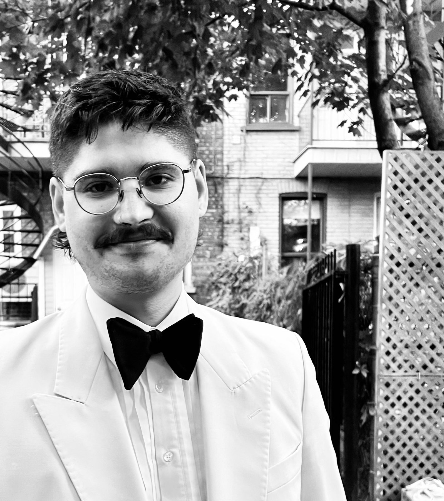

Circular systems are the common thread in my work.
In a treatment train, this means no output leaves as waste. In a kitchen, it means trim becomes stock. In a restored wetland, it means the system ultimately sustains itself. This principle has proven useful in every role I have held.
My interests lie where water, soil and living systems meet: remediating contaminated sites, restoring wetlands and streams, and designing treatment systems that work with ecological processes rather than against them. I intend to pursue this work in British Columbia, where I first studied natural resource management.
I currently work as a chef at Resilience Montréal, an Indigenous-led day centre in Tiohtià:ke (Montréal). Working within an organization governed and guided by Indigenous community members has shaped how I approach my work: listening first, building trust over time, and following the direction of the communities a project affects. Much of the environmental work I hope to do takes place on Indigenous lands and waters, and I intend to bring that same respect to it.
Beyond engineering
- Reader
- Between 60 and 100 books a year.
- Fermenter
- Vice-president of McGill’s Fermenters & Brewers Club, where culinary practice meets applied microbiology.
- Eagle Scout
- Recipient of the William T. Hornaday Award for conservation work, my earliest experience in land and water stewardship.
- Maker
- Designing and 3D printing tools for the workshop. See the workshop.
Areas of interest
I am open to roles across the following areas, and many of the most compelling positions span several of them:
- Environmental and remediation engineering
- Ecological, wetland and restoration engineering
- Water resources and hydrology
- Water and wastewater treatment design
- Environmental field investigation and reporting
I am eligible to register as an Engineer-in-Training with Engineers and Geoscientists BC, hold a Class 5 driver’s licence, and am equally comfortable in the field and in the office.
Available now for junior and EIT positions in environmental, remediation, ecological and restoration engineering, and water resources in Vancouver
Get in touch
Email is the most reliable way to reach me. I am based in Tiohtià:ke (Montréal) and relocating to Vancouver, on the unceded territories of the xʷməθkʷəy̓əm (Musqueam), Sḵwx̱wú7mesh (Squamish) and səlilwətaɬ (Tsleil-Waututh) Nations.